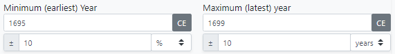

stratigraphic matrix editing and analysis tool
Table of Contents
- Introduction
-
Menu
- File - New
- File - Open (JSON)
- File - Save (JSON)
- File - Import Perio.do collection
- File - Import CSV
- File - Export CSV
- File - Export visible diagram (PNG)
- File - Export full diagram (PNG)
- View - Zoom in
- View - Zoom out
- View - Zoom to fit
- View - Refresh diagram
- View - Lock/Unlock diagram
- View - Redo layout
- Help - Show help
- Matrix diagram
- Tabs
- Year ranges
Introduction
The PHASER application was developed as part of the MATRIX project, which investigates ways that digital data from archaeological excavations can be made more useful and re-usable for a range of users and audiences. The application is intended to aid in the editing and analysis of archaeological stratigraphic data.
The PHASER application requires a modern web browser to function correctly. At the time of writing it has been tested using the following browser versions:
- Google Chrome - Version 100.0.4896.60 (Official Build) (64-bit)
- Microsoft Edge - Version 100.0.1185.29 (Official build) (64-bit)
The user interface for the application is composed of a menu, a diagram and a series of tabs, each of which are described in more detail in the following sections.
[Back to top]Menu
File - New
This will clear any current data from the tabs and from the diagram. You will not be able to recover the deleted data unless it has been saved to a JSON file first. A pop-up confirmation warning will be displayed before any data is cleared.
[Back to top]File - Open (JSON)
Opens a previously saved external JSON file compatible with the PHASER application. The JSON file stores the stratigraphic data, the diagram layout (current node positions) and any associated metadata, for data interchange and backup purposes. You can also import and export data in delimited text (CSV) format.
[Back to top]File - Save (JSON)
Save all current matrix data to an external JSON file. NOTE: as this application runs within your browser the file saving location is governed by your browser configuration settings. The default setting for saving to external files may be to save directly to a downloads folder with no intervening prompt. If this is the case (as you will observe if you attempt to save your data) you can optionally change your browser settings to display a prompt to choose the location in which to save the file, and to change the generated file name before saving. On Google Chrome browser (as an example) this is under "settings - advanced - downloads". There is an option "ask where to save each file before downloading". Other browsers should have similar configuration settings.
[Back to top]File - Import Perio.do collection
Import a collection of named periods from the Perio.do gazetteer dataset. The entire dataset is downloaded from the Perio.do site and then the application allows you to choose a specific collection (or "authority") to import into your own dataset. It is possible to import more than one collection if required. Once imported the periods can be referenced from other elements within the application e.g. you can assign a phase to a specific period. Imported periods are included in the JSON file when your matrix data is saved, so do not need to be subsequently re-imported. In the case that a suitable Perio.do collection does not already exist, you may also import your own set of periods from a delimited text (CSV) file instead.
[Back to top]File - Import CSV
Import data from a delimited text (CSV) file. Delimited files are UTF-8 text files. Each row of the file represents a data record ending with a newline character, and a specific text character delimits the boundary between fields. The application supports several commonly used delimiter characters (tab, comma, semicolon, pipe, or space). A header row contains delimited field names. These required field names are case-sensitive (e.g. siteCode ≠ SiteCode), but the ordering of the fields within the file does not affect the import. Data field values are all case-sensitive. The following tables detail the required fields for each delimited file import.
| Field name | Description |
|---|---|
| siteCode | Identifier of the site this phase falls within. There may be more than one site code used in the overall dataset, but an individual phase can only have one site code. |
| phaseID | Unique (within the site) identifier for this phase |
| minYear | Minimum year of the (entered) year range associated with this phase. Phases should define a year range, and the validation will flag up any which do not. |
| maxYear | Maximum year of the (entered) year range associated with this phase. Phases should define a year range, and the validation will flag up any which do not. |
| description | Textual description of the phase |
| withinPeriod | Identifier of the named period associated with this phase. Phases should be associated with a period, and the validation will flag up any which are not. |
| Field name | Description |
|---|---|
| siteCode | Identifier of the site this group falls within |
| groupID | Unique (within the site) identifier for this group |
| groupType | Type of group e.g. "hearth", "well", "trench" etc. |
| cud | Construction/use/disuse indicator. Possible values: "", "C", "U", "D", "CU", "UD", "CD", "CUD" |
| description | Textual description of the group |
| withinPeriod | Identifier of the period associated with this group. Groups should be associated with a period, and the validation will flag up any which are not. |
| withinPhase | Identifier of the phase this group falls within. Groups must be allocated to a phase, and the validation will flag up any which are not. |
| Field name | Description |
|---|---|
| siteCode | Identifier of the site this subgroup falls within |
| subgroupID | Unique (within the site) identifier for this subgroup |
| subgroupType | Type of subgroup e.g. "hearth", "well", "trench" etc. |
| cud | Construction/use/disuse indicator. Possible values: "", "C", "U", "D", "CU", "UD", "CD", "CUD" |
| description | Textual description of the subgroup |
| withinPeriod | Identifier of the period associated with this subgroup. Subgroups should be associated with a period, and the validation will flag up any which are not. |
| withinGroup | Identifier of the group this subgroup falls within. Subgroups must be allocated to a group, and the validation will flag up any which are not. |
| Field name | Description |
|---|---|
| siteCode | Identifier of the site this context falls within |
| contextID | Unique (within the site) identifier for this context |
| contextType | Type of context e.g. "layer", "cut", "fill" etc. Contexts should have a type, and the validation will flag up any which do not. |
| cud | Construction/use/disuse indicator. Possible values: "", "C", "U", "D", "CU", "UD", "CD", "CUD" |
| description | Textual description of the context |
| withinPeriod | Identifier of the period associated with this context. Contexts should be associated with a period, and the validation will flag up any which are not. |
| withinPhase | Identifier of the phase this context falls within |
| withinGroup | Identifier of the group this context falls within |
| withinSubgroup | Identifier of the subgroup this context falls within |
Note: fields withinPhase, withinGroup and withinSubgroup represent the containment grouping 'parent' - and are mutually exclusive for context. Contexts must fall within a subgroup, or a group, or a phase, and the validation will flag up any which are not. If more than one of these fields is actually populated, then the order of preference for the parent element is: 1 - withinSubgroup, 2 - withinGroup, 3 - withinPhase.
| Field name | Description |
|---|---|
| siteCode | Identifier of the site this stratigraphic record relates to |
| sourceID | Identifier of the source context |
| stratRelationship | Stratigraphic relationship (from source to target). Possible values: "above" (default), "below", or "equal". |
| targetID | Identifier of the target context |
The stratigraphy record is a uni-directional relationship between contexts (from source to target).
| Field name | Description |
|---|---|
| siteCode | Identifier of the site this stratigraphic record relates to |
| contextNo | Identifier of the source context |
| contextType | Type of context e.g. "layer", "cut", "fill" etc. |
| stratRelationship | Stratigraphic relationship (from source to target). Possible values: "above" (default), "below", or "equal". |
| relatedContextNo | Identifier of the target context |
An alternative stratigraphy record import format used in earlier work on the PHASER application, this option remains present for backward compatibility with earlier datasets already converted to this format for testing purposes.
| Field name | Description |
|---|---|
| siteCode | Identifier of the site this Dating record relates to |
| datingID | Unique (within the site) identifier for this Dating record |
| datingType | Type of Dating record |
| minYear | Minimum year of the (entered) year range for this Dating record |
| maxYear | Maximum year of the (entered) year range for this Dating record |
| description | Textual description of the Dating record |
| withinPeriod | Identifier of the period associated with this Dating record |
| withinContext | Identifier of the context this Dating record falls within |
| Field name | Description |
|---|---|
| periodID | Unique (within the site) identifier for this period record |
| minYear | Minimum year of the year range for this period record. Periods should define a year range, and the validation will flag up any which do not. |
| maxYear | Maxmum year of the year range for this period record. Periods should define a year range, and the validation will flag up any which do not. |
| description | Textual description of the period record |
| uri | URI associated with this period record |
An alternative to the CSV import is a pre-existing collection of periods imported from Perio.do. Via either route the imported items will then be listed in the table under the periods tab.
[Back to top]
File - Export CSV
Export data to a delimited text file. Refer to the tables above for a description of the fields that will be included in the output. Note the caveat about the saved files' location as described in file saving also applies to delimited text files.
[Back to top]File - Export visible diagram (PNG)
Save the currently visible portion of the matrix diagram to a PNG (Portable Network Graphics) format image file. Saving the currently visible portion allows you to zoom in to a detailed area of particular interest on a larger diagram and save an image of just that area. Note the caveat about the saved files' location as described in file saving also applies to PNG files.
[Back to top]File - Export full diagram (PNG)
Save the entire matrix diagram to a PNG (Portable Network Graphics) format image file. Note also the caveat about the saved files' location as described in file saving also applies to PNG files.
[Back to top]View - Zoom in
Increase the scale of the diagram to 'zoom in' on a particular area. Note the same functionality can alternatively be achieved using the slider to the left side of the diagram (slide up to zoom in or click the '+' button at the top of the slider), or by using the mouse wheel if available. Zooming in will occur even if there are no elements currently present on the diagram. There is a predefined maximum zoom extent set to prevent zooming the diagram in too far.
[Back to top]View - Zoom out
Decrease the scale of the diagram to 'zoom out' to view a wider area. Note the same functionality can alternatively be achieved using the slider to the left side of the diagram (slide down to zoom out or click the '-' button at the bottom of the slider), or by using the mouse wheel if available. Zooming out will occur even if there are no elements currently present in the diagram. There is a predefined minimum zoom extent set to prevent zooming the diagram out too far, although this extent may be exceeded by the 'zoom to fit' function on a larger diagram.
[Back to top]View - Zoom to fit
Increase or decrease the scale of the diagram to make all contents fit within the current window.
[Back to top]View - Refresh diagram
For performance reasons the diagram is not always kept in sync with changes being manually made to the underlying data. Periodically during data editing the diagram may go out of step with the data displayed in the tabs on the right hand side. This option will refresh the data shown in the diagram. The difference between this option and redo layout is that refreshing the diagram only syncs the data, it does not perform any repositioning of elements.
[Back to top]View - Lock/Unlock diagram
By default the diagram is 'locked', preventing inadvertent repositioning of individual elements. Whilst locked the diagram can still be panned and zoomed as required. To change the position of an individual element on the diagram unlock the diagram, reposition the element, then lock the diagram again. Also the 'redo layout' functionality cannot be performed whilst the diagram is locked. The menu option will display either "Lock diagram" or "Unlock diagram" - depending on the current lock status.
[Back to top]View - Redo layout
This will recalculate ALL element positions according to the "DAGRE" directed graph layout algorithm. The layout functionality cannot be performed whilst the diagram is locked, and the menu option will be disabled and greyed out accordingly. This option will automatically perform a refresh to ensure the diagram data is up to date prior to re-calculating the element positions.
[Back to top]Help - Show help
Displays this help documentation within a separate browser tab.
[Back to top]Matrix diagram
The diagram visually represents a matrix of contexts and the stratigraphic relationships between them, plus containment within subgroups, groups and phases. There are pan/zoom controls to the left hand side, a button to lock/unlock the diagram and a button to refresh the diagram data. There is a small expandable legend at the top right of the diagram helping to distinguish the various elements shown on the diagram. The background of the diagram is a light grey grid which helps with the manual layout of elements, and elements when dragged will 'snap to' (align with) this grid, and will also display alignment guidelines. (Note you can only drag elements when the diagram is unlocked).
[Back to top]Tabs
The tabs hold data about the elements of the stratigraphic graph - phases, groups, subgroups, contexts, datings, periods and stratigraphic relationships - allowing reviewing and editing. Each of these tabs also displays a total count of the elements of this type in the title. In addition there are tabs for validation, analysis of temporal relationships, metadata about the current dataset, search and group matrix data. The tabs react to selection of elements (either in the diagram, or in the table, or in other tabs) to display the details of the currently selected element, allowing viewing and editing of the data.
Phases
The table lists all phase records in the current dataset, table columns can be sorted and the data can be filtered. Phases can be added, edited or deleted. A year range can be manually set for a phase, and compared to the year range derived from any dating elements hierarchically "within" the phase. Phases should define a year range, and the validation will flag up any which do not.
[Back to top]Groups
The table lists all group records in the current dataset, table columns can be sorted and the data can be filtered. Groups can be added, edited or deleted.
[Back to top]Sub-Groups
The table lists all sub-group records in the current dataset, table columns can be sorted and the data can be filtered. Sub-groups can be added, edited or deleted.
[Back to top]Contexts
The table lists all context records in the current dataset, table columns can be sorted and the data can be filtered. Contexts can be added, edited or deleted. The context icon colours (black text on white background) are reversed to white text on black background for any contexts having one or more associated dating records.
[Back to top]Datings
The table lists all dating records in the current dataset, table columns can be sorted and the data can be filtered. Dating records can be added, edited or deleted.
[Back to top]Periods
The table lists all named periods in the current dataset, table columns can be sorted and the data can be filtered. Period records can be added, edited or deleted. A year range can be manually set for a period. Periods should define a year range, and the validation will flag up any which do not.
[Back to top]Stratigraphy
The table lists all stratigraphic relationships in the current dataset, table columns can be sorted and the data can be filtered. New stratigraphic relationships can be added or existing relationships deleted.
[Back to top]Validation
Various pre-defined validation checks can be performed on phases, groups, subgroups, contexts and periods to assist in improving consistency. The validation results are colour coded to indicate where there may be potential problems within the dataset. For mandatory tests ("MUST") the colour will be green (with an accompanying tick) when all elements have passed the validation check, and red (with an accompanying cross) where one or more elements have failed the test. For optional tests ("SHOULD") the colour will be green (with an accompanying tick) when all elements have passed the validation check, and yellow (with an accompanying cross) where one or more elements have failed the test. Tests that have not yet been run, or have no eligible elements will be coloured white. These validation checks can be re-run after changes are made to the underlying data. The results of each test can be expanded to view (and navigate to) any elements that have failed a particular validation check.
[Back to top]Temporal
Tables displaying temporal and stratigraphic relationships between elements. The first table (derived temporal relationships) shows temporal relationships between ALL elements hierarchically contained within the selected phase, regardless of whether they are related stratigraphically or not. Relationships can only be shown between elements that have a derived year range. The second table (derived stratigraphic relationships) shows temporal vs (direct or derived) stratigraphic relationships for elements contained within the selected phase. Colour coding of table rows is used to indicate where there is a divergence between what the stratigraphy says and what the dating evidence says. This helps to visualise whether the stratigraphic relationships are fully supported by the dating evidence (and vice versa). There is an accompanying key to explain this colour coding.
[Back to top]Metadata
General metadata describing (and stored with) the current dataset - fields contained within this section are optional. It is useful to record some supplementary metadata to keep track of the origins of the dataset, any revisions that may have been made, and suitable licensing and contact details for sharing the data with others. There is a read-only field listing any site codes used in the current data (there may be zero, one or many site codes). The other fields (title, description, creator, email, license, version) are all editable.
[Back to top]Search (experimental)
Search facilities to identify groups of elements based on hierarchical containment relationships (e.g. find all contexts and/or subgroups within a particular phase). You can select the type(s) of element you want to find, optionally limit the search to within a particular container element (i.e. a phase, a group or a subgroup), or related to a particular period. Once the search has been performed, you can sort and filter the results, and copy the results table to the clipboard.
[Back to top]Group Matrix (experimental)
The group matrix represents derived stratigraphic relationships between groups, these are determined based on the stratigraphic relationships between the contained contexts. The table lists these derived relationships with colour coding indicating any possible conflict between stratigraphic and temporal relationships. There is an accompanying key to explain this colour coding. The table data can be copied to the clipboard. Below the table is a small group matrix diagram for visualizing the groups and the derived relationships between them.
[Back to top]Year Ranges
Year ranges in the PHASER application are expressed relative to Common Era (CE), as a range from minimum (earliest) year to maximum (latest) year. Within tables these may be displayed either in individual named fields or as a single range value e.g. "1673 → 1730 (58)" - note the calculated duration in years (shown in brackets) spans from the start of the earliest year to the end of the latest year. Positive numbers represent CE years, and negative numbers represent BCE years. Derived date ranges are hierarchically calculated for phases, groups, subgroups and contexts - based on any dating records assigned to the contexts. Date ranges can also be manully entered for phases, dating records and periods. It is possible to retain a particular year range in the data but to exclude it from any subsequent calculations.
When entering year range extents, type a positive number and use the button to the right of the field to toggle between "CE" or "BCE" as appropriate. It is also possible to include an optional plus/minus (±) tolerance for the year values. Where required the tolerance may be expressed either as a number of years or as a percentage, and will then be displayed in tables as e.g. "1695±10y" or "1695±10%". The entered tolerance will also be accounted for in the calculation of durations, and in determining the temporal relationships between year ranges.
[Back to top]